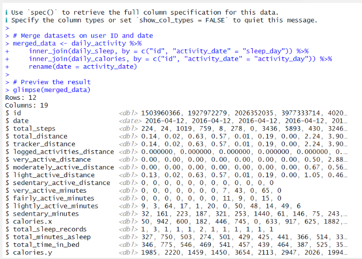
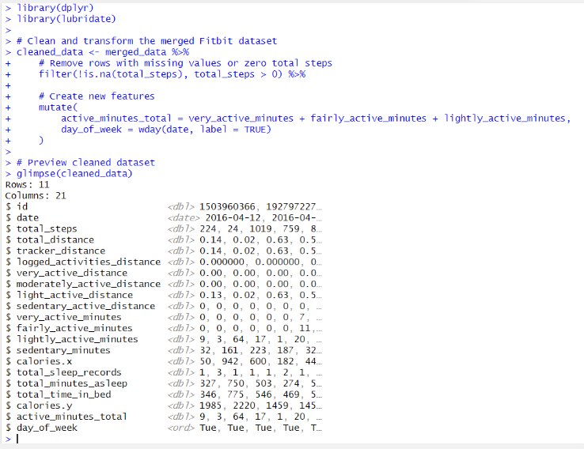
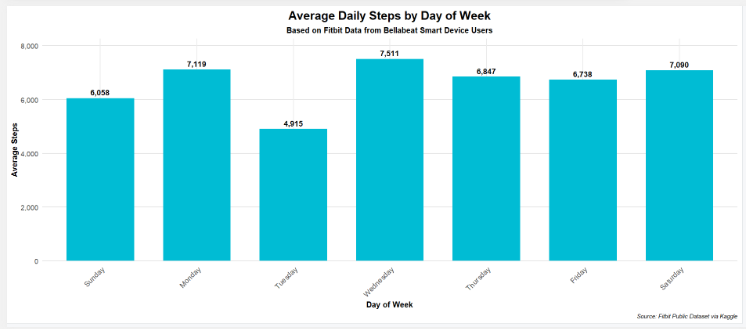
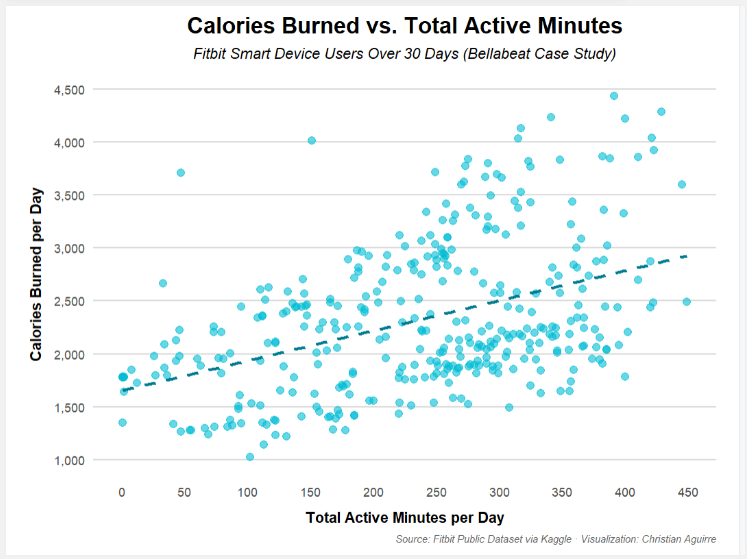
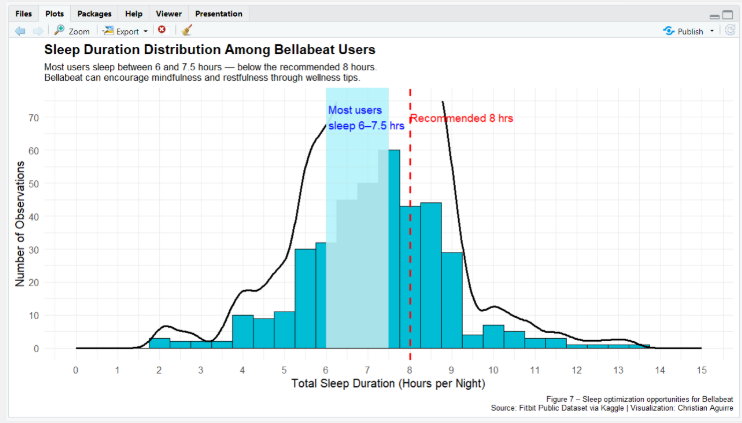
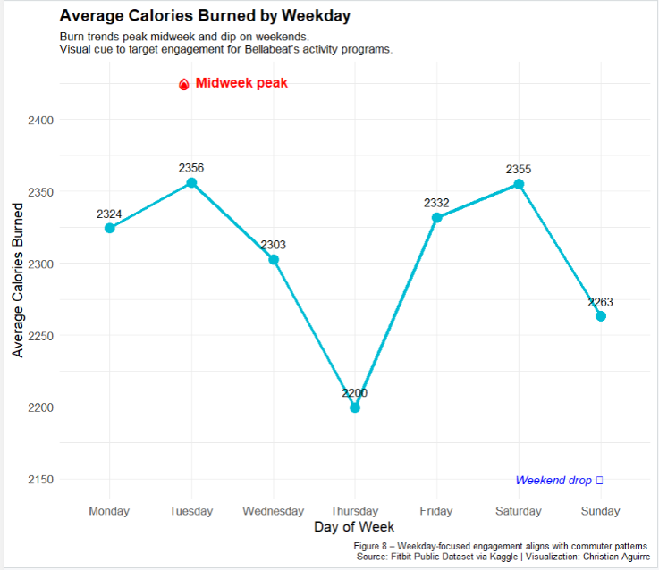

Bellabeat Smart Device Usage Analysis
Used real Fitbit activity and sleep data to understand how wellness habits translate into smart device engagement. The analysis surfaces patterns Bellabeat can use to shape product features and targeted marketing for health-conscious users.
Workflow Overview
Step 1
Ask
Define how device usage patterns guide Bellabeat strategy.
Step 2
Prepare
Load Fitbit steps, calories, distance, and sleep data.
Step 3
Process
Clean tables and join datasets by user + date.
Step 4
Analyze
Study activity, sleep, and weekly trends.
Step 5
Share & Act
Translate insights into engagement strategy.
Lab Breakdown
1. Dataset & Business Question
Fitbit data used as a proxy for Bellabeat users
Dataset of 30 Fitbit users over 30 days. Includes steps, distance, calories, intensity minutes, and sleep duration. Objective: determine what patterns Bellabeat can leverage for retention.

Figure 1 — Merged activity + sleep dataset preview
2. Data Cleaning & Feature Engineering
Joined tables on user + date, cleaned duplicates, standardized date formats, engineered features such as total active minutes and weekday labels.

Figure 2 — Cleaned dataset with engineered features
3. Daily & Weekly Behavior Patterns
- Steps peak mid-week (Tue–Thu)
- Sleep duration clusters between 6–7.5 hours
- Active minutes align with weekday routines
- Weekends show drop-off in movement

Figure 3 — Average daily steps by weekday
4. Key Visual Insights

Figure 4 — Strong positive relationship between active minutes and calories burned

Figure 5 — Sleep duration distribution among users

Figure 6 — Weekday calorie burn pattern

Figure 7 — Combined dashboard of Bellabeat engagement metrics
Summary
This analysis connects Fitbit behavior to Bellabeat engagement opportunities. By studying daily steps, calories, sleep, and weekly wellness trends, the project provides a foundation for timing in-app nudges, reinforcing healthy habits, and designing user-anchored wellness programs.